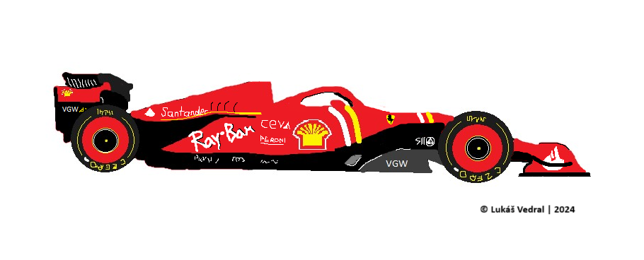

Mercedes
George Russell a Lewis Hamilton
Ferrari
Charles Leclerc a Carlos Sainz
Redbull Racing
Max Verstappen a Sergio Perez
RB
Yuki Tsunoda a Daniel Riccardo
McLaren
Lando Norris a Oscar Piastri
Aston Martin
Lance Stroll a Fernando Alonso
Williams
Alexander Albon a Logan Sergeant
Alpine
Pierre Gasly a Esteban Ocon
Kick Sauber
Zhou Guanyu a Valtteri Bottas
Haas
Nico Hulkenberg a Kevin Magnussen
Formule 1
Co je to F1?
Zkráceně F1, je série závodů formulí, založena v roce 1950, kdy nahradila Grand Prix automobilů.Je označována za královskou disciplínu automobilového sportu pro takzvané monoposty. Spadá pod Mezinárodní automobilovou federaci (FIA), která je nejvyšší organizační složkou.
Historie
První automobilové závody byly pořádány ve Francii v 80. letech 19. století. Těch se zúčastňovaly automobily poháněné benzínem, parou i elektřinou. Na přelomu století se již začaly automobily v soutěžích rozdělovat do kategorií podle hmotnosti. První Velkou cenu uspořádal v roce 1906 francouzský autoklub Grand Prix l'ACF. V tom roce době platilo jediné omezení: Vůz nesmí mít hmotnost vyšší než 1000 kg.Do první světové války se pak konaly ještě tři Velké ceny.
Hned v prvních poválečných letech byla ustanovena Formule A, která se stala základem poválečných závodů Grand Prix, jež prozatím neměly status mistrovství. Několik závodů bylo zorganizováno již v období před druhou světovou válkou. Myšlenka uspořádat mistrovství světa spatřila světlo světa v roce 1947. Hned následující rok byla Formule A přejmenována na Formuli 1, přispěl k tomu i fakt, že vznikla nižší série Formule 2. Grand Prix automobilů se tento rok poprvé a naposledy jela také v Československu.
V počátečních letech byla organizována celá řada Grand Prix, které se do mistrovství světa nezapočítávaly. Během 57 ročníků (1950–2006) se uskutečnilo 768 Grand Prix, po skončení ročníku 2017 jejich počet vzroste na 976 – k nim je nutné přidat dalších 368 závodů nezapočítávaných do klasifikace mistrovství světa v období 1946–1983. Počínaje rokem 1984 jsou všechny uskutečněné závody F1 součástí mistrovství světa Formule 1.
Vozy F1
Moderní formule jezdící v F1 se velmi liší od starších modelů ale zároveň i od modelů v nižsích úrovních motorsportu, jako je F2 a níže.Motor mají uložený uprostřed. Současným motorem F1 je šestiválec o objemu 1,6 litru, vybavený turbem a hybridními motorgenerátory. Ačkoli se nostalgici vysmívají jeho "malému" zdvihovému objemu, jedná se o nejsilnější motor, který se účastní závodů Grand prix. Za téměř 70 let však motory Formule 1 výrazně pokročily.
Skořepina celého monopostu je konstruována z kompozitu uhlíkových vláken, aby se docílilo nejnižší hmotnosti a bylo možné vůz vyvažovat posouváním těžiště a vyvažovacích závaží. Celková hmotnost vozu, a to i s pilotem a palivem, nesmí být po závodě méně než 620 kg.
Tyto vozy jsou schopny projíždět zatáčky ve vysokých rychlostech a to díky aerodynamickému přítlaku. Ten funguje na principu obráceného křídla, které používají letadla, aby mohla létat. Na přelomu šedesátých a sedmdesátých let se poprvé na vozech křídla s obráceným efektem než u letadla. Tím se obrátí i síla, která tlačí letadlo do vzduchu a bude přitlačovat auto k zemi. Vzduch proudící pod křídlem musí být rychlejší než ten, který proudí nad křídlem. Aby se toho docílilo, musí být křídlo zkonstruováno tak, aby spodní část křídla tvořila větší vzdálenost než ta horní. 
Sezóna 2023
Minulá sezóna byla 74. v pořadí, účastnilo se 20 jezdců v 10 týmech.Těmito týmy byl Red Bull, Alpha Tauri, Scuderia Ferrari, Alfa Romeo, Haas, Mercedes, McLaren, Aston Martin, Williams a Apline.
Sezóna 2023
Minulá sezóna byla 74. v pořadí, účastnilo se 20 jezdců v 10 týmech. Těmito týmy byl Red Bull, Alpha Tauri, Scuderia Ferrari, Alfa Romeo, Haas, Mercedes, McLaren, Aston Martin, Williams a Apline.Během sezóny se v týmu AlphaTauri byl vyměněn nizozemský jezdec Nyck de Vriese australanem Danielem Riccardem, ten si během jednoho tréninku zlomil ruku a byl později nahrazen Liamem Lawsonem.
Z dvaceti dvou závodů vyhrál Max Verstappen pro tým RedBull devatenáct z nich. Dvakrát potom zvítězil Sergio Peréz, také pro RedBull. Patnáctý závod v sezóně vyhrál jezdec pro Ferrari, Carlos Sainz Jr.
Sociální sítě
> Oficiální stránky> Oficiální instagram
> Oficiální twitter